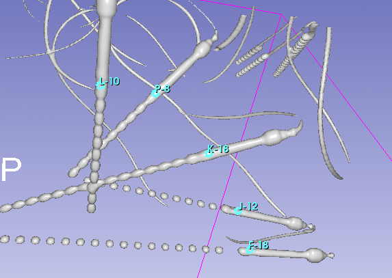

Module Overview
The SEEG Contact Detector supports multiple input configurations depending on the data available. At a minimum, the module requires a post-implantation CT volume and a brain mask segmentation or a T1-weighted MRI volume. The following sections describe the workflow based on the available input modalities.

The module consists of an Input section, where the user can provide various combinations of data. To simplify setup, several inputs are selected automatically based on node names:
- A volume containing
CTin its name is automatically selected as Input CT - A volume containing
T1in its name is automatically selected as Input T1 (used for brain masking) - A segmentation containing
Maskin its name is automatically selected as CT Brain mask - A Markups node containing
Fiducialsin its name is automatically selected as Bolt fiducials
When a post-implantation CT scan with SEEG electrodes is provided, the Show CT button can be used to refocus all 2D slice views on the selected CT volume.
Brain Mask
The algorithm requires a brain mask segmentation in CT space. If a brain mask is loaded manually, it must already be registered to the CT.

If a brain mask is not available, a T1-weighted MRI volume can be provided to generate it automatically. After clicking Create from T1, the module:
- Registers the T1 volume to the CT
- Computes a brain mask using HD-BET
- Creates the following new nodes:
- Transform T1 to CT
- Transform CT to T1
- CT Brain mask
The Transform T1 to CT is immediately applied to the T1 volume, and the generated CT Brain mask is automatically selected as the active brain mask for the module.
Bolt Fiducials
The final required input is Bolt fiducials, which represent the tips of the anchor bolts of the SEEG electrodes. A Markups node can be loaded from a file or created manually using this module.

To manually place bolt fiducials:
- Use Head rendering (F5) to orient the patient’s head according to the implantation plan
- Switch to Metal rendering (F6) to clearly visualize the anchor bolt
- Place a fiducial on each anchor bolt, positioned near the tip of the bolt
- Repeat this process for all electrodes
Each fiducial should lay on the metal of the anchor bolt and must be placed near the tip of the anchor bolt corresponding to an SEEG electrode.
Manually created fiducials inside SEEG Contact Detector are automatically named in alphabetical order using the format: [label]-[number_of_contacts]
For example:
A-12B-10
Naming Convention
You may rename electrodes, but the naming convention must be preserved. The electrode label may contain multiple letters, numbers, and dashes; however, the final dash must be followed by the total number of contacts. Specifically:
labelidentifies the electrode and may include letters, numbers, and dashesnumber_of_contactsspecifies the total number of contacts on that electrode and must appear after the last dash
Running the Detection
Once all anchor bolts are correctly labeled, click Run to start the detection process.
After completion, a new Markups node named Electrodes is created. This node contains the estimated centers of the contacts for each electrode, named using the format: [label][contact_index], where contact_index denotes the contact position starting from the tip of the electrode toward the entry point.

The detected contact list is automatically expanded, allowing you to view the coordinates of all contacts. Selecting a contact in the list automatically refocuses the slice views on its location. You can also use the down arrow key to navigate sequentially through the detected contacts. This makes it quick and easy to visually inspect all detections.

If some detected contacts are misaligned, the module provides options to manually adjust the results. Please refer to the Troubleshooting section for detailed instructions.
View in Scene
The View in Scene button configures the scene for rapid visual inspection of detected electrodes, primarily intended for radiologists and neurologists.

When activated:
- Slice views and 3D rendering are re-centered
- Head rendering is enabled
- If a T1 volume is available:
- T1 is set as the background
- CT is set as the foreground
- CT coloring is set to Ocean
- Thresholding is enabled so that only metallic structures are visible
- The brain mask and input bolt fiducials are hidden
If the brain mask was generated using Create from T1 and a Transform CT to T1 exists, this transform is applied so that the CT, brain mask, bolt fiducials, and detected electrodes are all displayed in T1 space.
When View in Scene is deactivated:
- CT coloring is restored
- CT thresholding is disabled
- Previously applied transformations remain unchanged